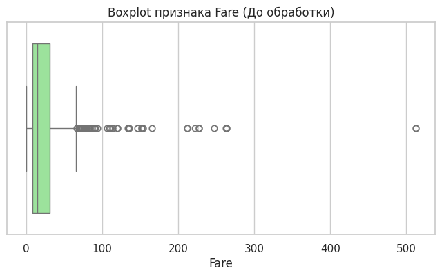
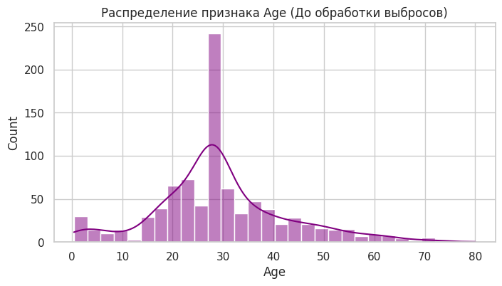
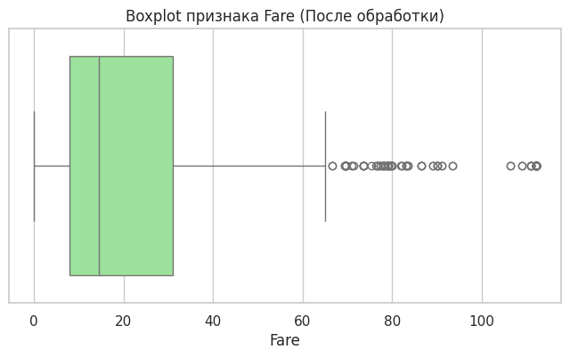
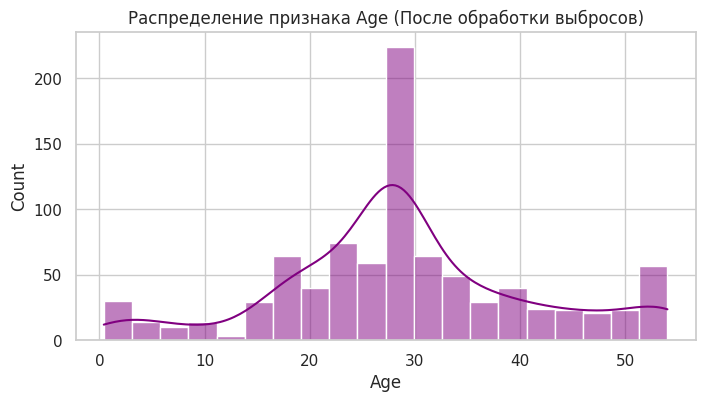

Отчет по лабораторной работе: Очистка и трансформация данных (Pandas)
Группа: P3121
Введение
Цель работы
Освоение методов очистки и трансформации данных с использованием библиотеки pandas на примере реальных данных пассажиров Титаника из соревнования платформы Kaggle.
Описание набора данных
Использовался датасет обучающей выборки train.csv. Набор содержит 891 запись о пассажирах. Признаки описывают демографические показатели (возраст, пол), социальный статус (класс билета), семейное положение (количество родственников на борту), а также целевую переменную — Survived (выжил пассажир или нет, 0/1).
Первичный анализ
Статистика датафрейма
- Размерность данных: 891 строка, 12 столбцов.
- Типы данных: включают числа с плавающей точкой (
float64), целые числа (int64) и строки (object). - Целевая переменная:
Survivedимеет среднее значение 0.383, что означает, что выжило около 38.3% пассажиров из обучающей выборки. - Базовые метрики: Средний возраст пассажиров составил ~29.7 лет (среди заполненных), средняя стоимость билета (
Fare) — 32.20.
Визуализация пропусков
При проверке на пустые значения (isnull().sum()) было выявлено 3 проблемных столбца:
1. Age: 177 пропусков (~19.8% от всех данных).
2. Cabin: 687 пропусков (~77.1% от всех данных).
3. Embarked: 2 пропуска (~0.2%).
Обработка пропусков
Методы заполнения
-
Age (Возраст): После сравнения среднего значения (29.69) и медианы (28.00), было принято решение использовать медиану (28.0). Это позволило избежать искажений из-за выбросов (возрастных пассажиров).
-
Embarked (Порт посадки): Два пропущенных значения заполнены наиболее часто встречающимся значением (модой) — портом
S(Саутгемптон). - Cabin (Каюта): Так как столбец содержал более 77% пропусков, он был удален. Однако предварительно на его основе был создан новый признак, а пропущенные значения заменены на категорию
U(Unknown).
Результаты обработки
Все пропуски были устранены. Процент обработанных пропущенных значений составил 100%. Датасет больше не содержит значений NaN.
Трансформация данных
Созданные признаки
Был проведен Feature Engineering, в результате которого создано 5 новых признаков:
1. Age_group: Возраст разбит на 5 категориальных корзин: Child (0-12), Teenager (12-18), Young Adult (18-35), Adult (35-60), Senior (60+).
2. Title: Из столбца Name с помощью регулярных выражений выделены обращения. Редкие титулы (Dr, Rev, Col и др.) объединены в группу Rare, синонимы приведены к стандарту (Mlle -> Miss).
3. FamilySize: Вычислен как сумма братьев/сестер (SibSp) и родителей/детей (Parch) + 1 (сам пассажир).
4. IsAlone: Бинарный признак. Равен 1, если FamilySize == 1 (пассажир путешествовал один), иначе 0.
5. Cabin_Letter: Палуба размещения (первая буква из номера каюты: A, B, C... или U).
Преобразования типов
- Столбец
Pclassиз числового формата преобразован в категориальный строковый: 1 →F(First), 2 →S(Second), 3 →T(Third). - Признак
Sexпереведен в бинарный числовой формат:male→ 0,female→ 1, что необходимо для будущих моделей машинного обучения.
Обработка выбросов
Выявленные выбросы
Построенный Boxplot для признака Fare (стоимость билета) выявил сильную асимметрию распределения (скошенность вправо). Метод межквартильного размаха (IQR) идентифицировал 116 выбросов, включая сверхдорогие билеты стоимостью >500. В признаке Age гистограмма показала наличие пассажиров старше 65–70 лет, что также является отклонением от основной массы.


Методы обработки
К данным была применена техника винзоризации (Winsorization). Экстремальные значения были жестко ограничены 95-м перцентилем (метод .clip()):
* Значения возраста старше 54 лет были заменены на 54.0.
* Стоимость билета свыше 112.08 была заменена на 112.08.
Данный подход сохранил информацию о высоких значениях признаков, но устранил их искажающее влияние на дисперсию модели.


Агрегация и анализ
Сводные статистики
С помощью группировок (groupby) и сводных таблиц (pivot_table) были выявлены следующие закономерности:
1. Выживаемость по классам: пассажиры 1-го класса (F) выживали в 62.9% случаев, 2-го (S) — в 47.2%, 3-го (T) — лишь в 24.2%.
2. Выживаемость по полу и классу: Женщины в 1-м и 2-м классах выживали почти гарантированно (96.8% и 92.1%). Среди мужчин наибольший шанс выжить был в 1-м классе (36.8%), а наименьший — в 3-м классе (~13.5%).
3. Возраст по портам посадки: Медианный возраст по всем портам близок к 28 годам (из-за заполнения медианой), однако пассажиры из порта Q (Квинстаун) в среднем путешествовали без семей и чаще покупали билеты 3-го класса.
4. Сводная таблица (Age_group, IsAlone, Sex): Одинокие мужчины-взрослые выживали крайне редко. Самый высокий шанс на спасение имели женщины и дети, путешествующие с семьями (IsAlone=0).
Визуализации
В ходе работы были построены гистограммы распределений, Boxplot для анализа аномалий и тепловая карта (Heatmap) корреляции Пирсона.
* Выявлена высокая положительная корреляция (0.54) между полом (Sex=1 - женщины) и целевой переменной Survived.
* Наблюдается отрицательная корреляция (-0.20) между IsAlone и Survived (одинокие спасались реже).
* Положительная связь (0.31) между стоимостью билета Fare и шансом на спасение.
Заключение
Результаты работы
- Данные успешно считаны, исследованы и трансформированы.
- Пропущенные значения заполнены с использованием статистических метрик (медиана, мода) или вынесены в отдельную категорию.
- Извлечено 5 новых, семантически значимых признаков, которые лучше описывают данные.
- Аномальные значения обработаны методом винзоризации, что улучшило нормальность распределений.
- Финальный очищенный набор данных сохранен в файл
titanic_cleaned.csv.
Выводы
Библиотека pandas показала высокую эффективность для задач Data Preprocessing. С помощью агрегации данных была математически подтверждена историческая концепция рассадки по шлюпкам: "Женщины и дети в первую очередь", а также классовое неравенство на борту. Полученный датафрейм теперь очищен от шума, снабжен новыми фичами и полностью готов для тренировки моделей машинного обучения.